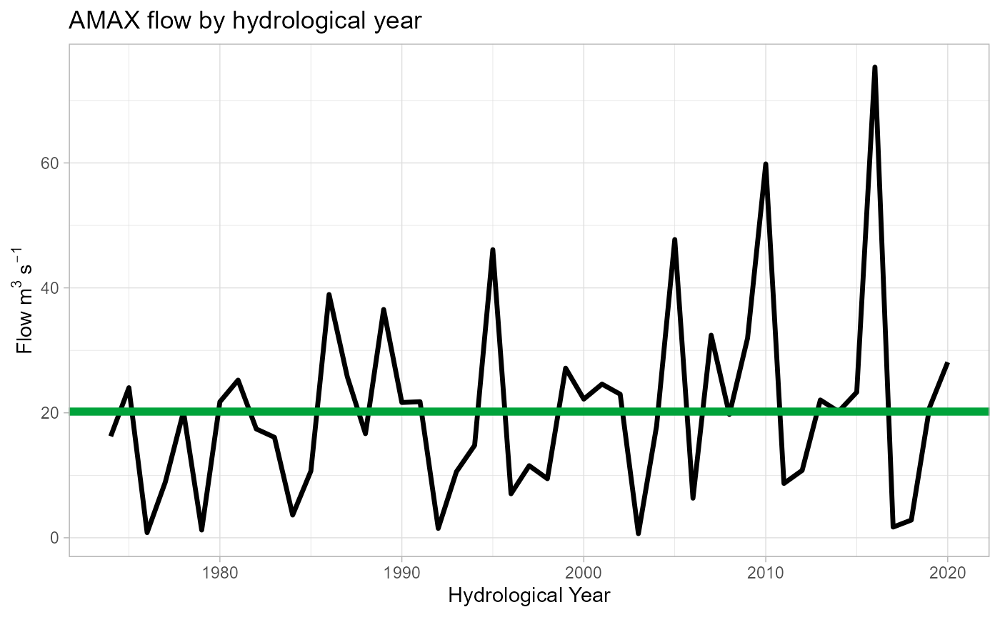

HydroEnR-Welcome.RmdCurrently this is just a test page but more documentation will be added over time.
To load the package use;
library(HydroEnR)
#>
#> Attaching package: 'HydroEnR'
#> The following object is masked from 'package:stats':
#>
#> windowLet’s import some QMED data from NRFA, the site we’ll use is ‘St Johns Beck at Thirlmere Reservoir’ - ID: 75001
For this we will require the rnrfa package.
library(rnrfa)
#> Warning: package 'rnrfa' was built under R version 4.0.5
data <- rnrfa::get_ts(id = 75001, type = 'amax-flow')
data
#> amax-flow
#> 1974-02-16 16.243
#> 1975-01-22 24.027
#> 1976-01-02 0.818
#> 1977-02-07 8.913
#> 1977-10-31 20.196
#> 1978-11-15 1.235
#> 1979-12-27 21.760
#> 1980-12-13 25.240
#> 1982-02-10 17.417
#> 1982-12-19 16.079
#> 1984-02-07 3.632
#> 1985-09-21 10.674
#> 1985-12-21 38.943
#> 1986-11-25 25.794
#> 1988-01-09 16.658
#> 1989-03-09 36.551
#> 1990-02-19 21.651
#> 1991-03-19 21.781
#> 1991-10-31 1.497
#> 1993-01-24 10.572
#> 1994-03-23 14.790
#> 1995-01-31 46.124
#> 1996-01-13 7.035
#> 1997-03-02 11.539
#> 1998-03-07 9.451
#> 1999-01-06 27.152
#> 2000-01-12 22.193
#> 2000-12-05 24.599
#> 2002-02-11 22.977
#> 2002-10-27 0.652
#> 2004-02-03 17.888
#> 2005-01-08 47.746
#> 2005-11-11 6.333
#> 2006-12-11 32.431
#> 2008-01-14 19.742
#> 2008-10-23 31.950
#> 2009-11-19 59.840
#> 2011-02-09 8.695
#> 2012-01-04 10.780
#> 2012-12-31 22.058
#> 2014-02-24 20.196
#> 2015-01-01 23.304
#> 2015-12-05 75.353
#> 2017-03-31 1.710
#> 2017-11-22 2.832
#> 2019-03-16 20.839
#> 2020-02-09 28.101To find the QMED we will use the QMED function;
qmed <- QMED(data)
qmed
#> [1] 20.196Now we’ll make a plot of the data
plotQMED(data)
#> [1] Estimated QMED: 20.196 cumecs
Within HydroEnR we can calculate the L-moments individually or as a grouped function.
To calculate the L1;
L1(data)
#> [1] 20.34023You can also apply an urban adjustment. For this you can nest the function
Alternatively, you can use a piping operator from the magrittr library. In this example we will set the DeUrb parameter to TRUE, normally set to FALSE.
Using the Ls() function HydroEnR can bundle up all the L-moment calculations;
Ls(data)
#> L1 L2 L3 L4 LCV LCA LKUR LSkew
#> 1 20.34023 8.075772 1.588365 1.73832 0.3970343 0.1966827 0.2152513 0.1966827
#> QMED
#> 1 20.196Urban adjustments can also be added with the URBEXT2000 and DeUrb parameters
Ls(data, URBEXT2000 = 0.3, DeUrb = FALSE)
#> L1 L2 L3 L4 LCV LCA LKUR LSkew
#> 1 20.34023 8.075772 1.588365 1.73832 0.3326938 0.1966827 0.2152513 0.2493874
#> QMED
#> 1 20.196